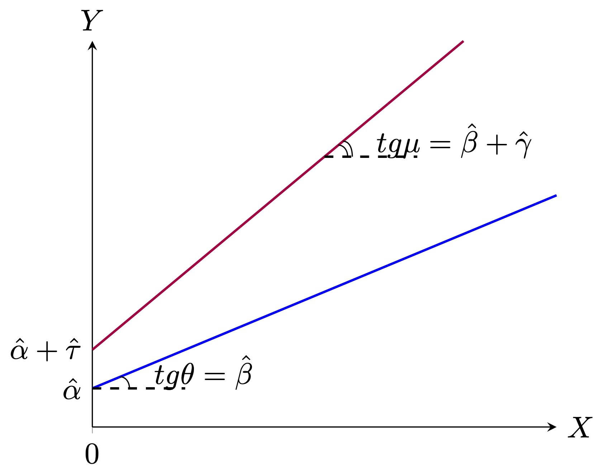

library(tidyverse)
library(dplyr)
library(ggplot2)
library(stargazer)
library(grf)8 Гетерогенные эффекты
8.1 Теория
В прошлых темах мы оценивали средние эффекты воздействия. Виной тому была фундаментальная прблема причинного вывода, которая заключается в том, что мы не наблюдаем оба потенциальных исхода для каждого из наблюдений. Те методы, которые мы обсуждали, использовали разные агрегации средних, чтобы преодолеть эту проблему.
Тем не менее есть много ситуаций, когда нам хотелось бы знать какой эффект получает каждое из наблюдений, которое подверглось воздействию. Или какой эффект будет иметь наблюдение с определенным набором характеристик, если его подвергнуть воздействию. С ответом на эти вопросы помогают методы оценки гетерогенных эффектов.
Итого:
- Средний эффект \(ATE = \mathbb{E}[Y_{i1} - Y_{i0}]\)
- Гетерогенный эффект \(CATE = \tau(x) = \mathbb{E}[Y_{i1} - Y_{i0}|X=x]\)
Одним из способов решения такой задачи вы уже владеете. Если мы знаем верную спецификацию нашей зависимой переменной, то эту задачу можно решить с помощью обычного МНК:
\[Y_i = \alpha + \tau T_i + \beta X_i + \gamma T_i X_i + \varepsilon_i\]
- \(T = 0\): \(Y_i = \alpha + \beta X_i + \varepsilon_i\)
- \(T = 1\): \(Y_i = (\alpha + \tau) + (\beta + \gamma) X_i + \varepsilon_i\)

При таком моделировании коэффициент \(\gamma\) является гетерогенным эффектом, а \(\tau\) средним эффектом. Однако мы не всегда можем применить этот способ, например, у нас может быть слишком много ковариат или мы мало ззнаем о том, какая спецификация является корректной. В этом случае на помощь нам приходят альтернативные подходы к решению данной задачи – непараметрические методы, одним из которых является причинный случайный лес.
Causal Random Forest (CRF) – это метод анализа причинно-следственных связей, который объединяет идеи случайного леса с методами для оценки эффектов воздействия.
Прежде чем описывать алгоритм причинного случайного леса, разберемся, как работает одно дерево решений. Алгоритм построения отдельного дерева решений в Causal Random Forest включает в себя несколько этапов:
Выбор случайной подвыборки данных (bootstrap sample). На каждом этапе построения дерева случайным образом выбирается подмножество данных с возвратом из общего набора данных. Это означает, что одни и те же элементы данных могут быть выбраны несколько раз, а другие могут вообще не попасть в выборку.
Выбор случайного подмножества признаков. Также на каждом этапе случайным образом выбирается подмножество признаков из всего набора признаков. Это делается для уменьшения корреляции между деревьями в ансамбле и повышения разнообразия моделей.
Предположим, что наша бутстраповская выборка представлена на рисунке ниже. Также предположим, что случайным образом среди всех ковариат мы выбрали признаки \(x_1\) и \(x_2\). В рамках процедуры выбираются не обяхательно все признаки. Для простоты визуализации допустим, что их всего 2.
- Построение дерева решений. Строится дерево решений, начиная с корневого узла (\(D\)). На каждом уровне дерева выбирается лучший признак для разделения данных на две подгруппы. Лучший признак определяется на основе критерия разделения \([\hat{\tau}_{-}(x) - \hat{\tau}_{+}(x)]^2 \rightarrow \underset{c_j}{max}\), где \(\hat{\tau}_{-}(x) = \bar{Y}_{T=1, x_k < c_j} - \bar{Y}_{T=0, x_k < c_j}\), \(\hat{\tau}_{+}(x) = \bar{Y}_{T=1, x_k > c_j} - \bar{Y}_{T=0, x_k > c_j}\). На первом шаге данные выражения примут вид:
\([\hat{\tau}_{-}(x) - \hat{\tau}_{+}(x)]^2 \rightarrow \underset{c_1}{max}\)
\(\hat{\tau}_{-}(x) = \bar{Y}_{T=1, x_1 < c_1} - \bar{Y}_{T=0, x_1 < c_1}\)
\(\hat{\tau}_{+}(x) = \bar{Y}_{T=1, x_1 > c_1} - \bar{Y}_{T=0, x_1 > c_1}\)

- Рекурсивное построение дерева. После разделения данных на подгруппы, процесс строительства дерева рекурсивно повторяется для каждой подгруппы. Это продолжается до достижения критерия останова, такого как максимальная глубина дерева или минимальное количество образцов в листьях (в каждом листе должно быть не менее одного наблюдения из группы воздействия и не менее одного наблюдения из контрольной группы, чтобы оставалась техническая возможность рассчитать эффект).
- Формирование листьев (терминальных узлов). Когда достигается критерий останова, узел становится листом (терминальным узлом) дерева, и в этом листе присваивается прогнозное значение (\(\hat{\tau}(x)\)) – оценка тритмент эффекта для значения харакетристик, которые привели в этот лист.
Также существует понятие “честности” отдельного дерева. Дерево считается честным, если разделяет свою бутстраповскую выборку на 2 части: на первой части строится дерево (определяются \(c_j\)) [sampling], на второй части оценивается эффект \(\hat{\tau}(x)\) [labeling].
Алгоритм работы Causal Random Forest:
Построение ансамбля деревьев решений. Фактически ансамбль – это какая-либо агрегация более простых алгоритмов. В нашем случае среднее из прогнозов отдельных деревьев. При этом каждое дерево отличается от остальных. Каждое дерево решений строится на основе случайной подвыборки данных с возвратом (bootstrap sample) и случайного подмножества признаков на каждом узле (обычно квадратный корень из количества признаков).
Повторение процесса. Процесс построения дерева повторяется множество раз (обычно сотни или тысячи раз) с разными подвыборками данных и подмножествами признаков, чтобы создать ансамбль деревьев. Пусть исходный набор данных \(D\), а деревьев \(B\) штук, то есть всего нам понадобится \(B\) бутстраповских подвыборок размера \(n\): \(D_1, D_2, ..., D_B\). На каждой подвыборке строится дерево, которе дает прогноз тритмент эффекта \(\hat{m}_b(x)\)
Вывод прогноза ансамбля. Для построения прогноза ансамбля прогнозы отдельных деревьев агрегируются7 В нашем случае считается обычное среднее \(\hat{m}_{RF}(x) = \frac{1}{B}\sum_{b=1}^B\hat{m}_b(x)\)
Алгоритм случайного леса содержит в себе множество гиперпараметров, которые выбираются экзогенно. Некоторые из них мы уже обсуждали – количество деревьев, их глубина, минимальная величина листа. Есть еще много других гиперпараметров. Для того, чтобы их подобрать, а также проверить точность прогноза деревьев, используется техника похожая на кросс-валидацию, которую мы с вами обсуждали в теме про регуляризацию. В случае случайного леса выборка делится на две части (необязательно равные). На первой части [train] строится ансамбль, на второй [test] – считается ошибка прогноза.
Иногда, чтобы экономить выборку и не уменьшать её за счет test части, используют Out-of-Bag sample.
Out-of-Bag (OOB) sample (“выборка вне мешка”) – часть данных, которая не была включена в обучение конкретного дерева решений в ансамбле.
Принцип работы OOB-выборки:
Для построения каждого дерева в ансамбле используется случайная подвыборка данных с возвратом (bootstrap sample). Это означает, что некоторые элементы данных могут попасть в эту подвыборку несколько раз, а некоторые вообще не попадут.
OOB-выборка для конкретного дерева состоит из тех элементов данных, которые не были включены в подвыборку для этого дерева. Иными словами, это данные, которые “выпали” из “мешка” (bootstrap sample), используемого для обучения дерева.
После построения дерева решений можно оценить его качество, используя OOB-выборку.
Качество прогнозов на OOB-выборке может быть усреднено или оценено для определения точности модели, не требуя отдельной валидационной выборки. Это позволяет оценить, насколько хорошо дерево решений (или весь ансамбль) обобщает данные и способно делать прогнозы для новых данных.
OOB-оценка является важным инструментом для оценки качества случайного леса и других ансамблей деревьев, так как она предоставляет внутреннюю меру качества модели, которая может быть использована без необходимости дополнительного разделения данных на обучение и тестирование.
Out-of-Bag (OOB) sample отличается от использования train и test выборок следующим образом:
Происхождение данных:
- Train и Test выборки: Train выборка используется для обучения модели, в то время как Test выборка используется для оценки качества модели на независимых данных, которые модель не видела в процессе обучения. Train и Test выборки обычно являются фиксированными подмножествами данных, которые предварительно разделены.
- OOB-выборка: OOB-выборка создается на этапе обучения каждого дерева в ансамбле, путем исключения (выбрасывания) части данных из обучающего набора, которые не включены в bootstrap-подвыборку, используемую для обучения данного дерева. Это означает, что каждое дерево имеет свою собственную OOB-выборку.
Назначение данных:
- Train и Test выборки: Train выборка используется для настройки параметров модели и обучения алгоритма. Test выборка используется для оценки качества модели и проверки её обобщающей способности на новых данных.
- OOB-выборка: OOB-выборка используется для оценки качества модели на этапе обучения, без необходимости дополнительного разделения данных на train и test выборки. Каждая часть данных будет использоваться для оценки конкретного дерева в ансамбле.
Использование данных:
- Train и Test выборки: Train и Test выборки используются в разные моменты времени. Train выборка используется для обучения модели, а Test выборка - для оценки модели после обучения.
- OOB-выборка: OOB-выборка используется на этапе обучения каждого дерева для оценки качества этого конкретного дерева. Поскольку каждое дерево имеет свою собственную OOB-выборку, результаты оценки могут быть использованы для оценки всего ансамбля.
Важно отметить, что OOB-оценка позволяет измерить качество модели на этапе обучения без необходимости отдельной тестовой выборки. Она особенно полезна в случае использования ансамблей, таких как Random Forest, и может быть использована для оценки обобщающей способности модели и выбора гиперпараметров.
8.2 Пример
data <- read.csv("table_cian_mos_ecm.csv")Набор данных включает следующие переменные:
price– цена аренды квартиры в рублях;total_area– общая площадь квартиры в квадратных метрах;
discrim_proxy– наличие дискриминирующего текста в описании объявления;*_rajon– набор бинарных переменных, соотвествующих районам Москвы, где расположена квартира;first_floor– бинарная переменная, равная единице, если квартира расположена на первом этаже;*_rooms– набор бинарных переменных, соотвествующих количеству комнат в квартире;starii_fond– бинарная переменная, равная единице, если квартира принадлежит к старому жилому фонду;blochnii– бинарная переменная, равная единице, если квартира находится в блочном доме;derevjannii– бинарная переменная, равная единице, если квартира находится в деревянном доме;kirpichnii– бинарная переменная, равная единице, если квартира находится в кирпичном доме;monolitnii– бинарная переменная, равная единице, если квартира находится в монолитном доме;panelnii– бинарная переменная, равная единице, если квартира находится в кирпичном доме;stalinskii– бинарная переменная, равная единице, если квартира находится в сталинском доме;repair– бинарная переменная, равная единице, если в квартире сделан ремонт;four_and_over_rooms– бинарная переменная, равная единице, если в квартире четыре и более комнат.
8.2.1 Подготовка
Создадим логарифмы площади и цены:
data$log_total_area <- log(data$total_area)
data$log_price <- log(data$price)Произвольно разделим выборку на 2 части.
Как и раньше выберем нужные нам строчки, используя двоеточие для создания последовательности чисел. Первая половина датасета будет обучающей выборкой, вторая – тестовой:
data_train <- data[1:13000,] # обучающая выборка
data_test <- data[13001:26041,] # тестовая выборкаСинтаксис функции, которую мы будем далее использовать, предполагает, что мы должны передавать ей зависимую переменную, контрольные переменные и формулу модели отдельными объектами. Поэтому нам нужно их заранее заготовить.
X <- data %>% select(-price, -log_price, -total_area, -discrim_proxy, -X) %>%
model.matrix( ~ ., data = .)X матрица контрольных переменных, где первый столбец – константа.
head(X, 5) (Intercept) Mos_center Akimanka_rajon Hamovniki_rajon Tverskoj_rajon
1 1 0 0 0 0
2 1 0 0 0 0
3 1 0 0 0 0
4 1 1 0 0 1
5 1 0 0 0 0
Taganskij_rajon Krasnoselskij_rajon Mesanskij_rajon Zamoskvorece_rajon
1 0 0 0 0
2 0 0 0 0
3 0 0 0 0
4 0 0 0 0
5 0 0 0 0
Basmannyj_rajon Arbat_rajon first_floor one_room two_rooms three_rooms
1 0 0 0 0 0 1
2 0 0 0 1 0 0
3 0 0 0 1 0 0
4 0 0 0 0 0 1
5 0 0 1 0 1 0
starii_fond blochnii derevjannii kirpichnii monolitnii panelnii stalinskii
1 0 0 0 0 0 0 1
2 0 0 0 0 0 1 0
3 0 0 0 0 0 1 0
4 0 0 0 0 0 0 0
5 0 1 0 0 0 0 0
repair four_and_over_rooms log_total_area
1 0 0 4.812184
2 0 0 3.427515
3 1 0 3.637586
4 0 0 5.075174
5 0 0 3.912023Сохраним все нужные нам объекты отдельно:
X_mod <- X[1:13000,]
Y_mod <- data_train$log_price
T_mod <- data_train$discrim_proxy8.2.2 Причинный случайный лес
Используя заготовленную обучающую выборку строим лес, состоящий из 10000 деревьев:
B <- 10000
model <- causal_forest(X = X_mod,
Y = Y_mod,
W = T_mod,
num.trees = B,
min.node.size = 10,
honesty = TRUE)Считаем оценки на тестовой выборке:
X.test <- X[13001:26041,]
tau_forest <- predict(model,
X.test,
estimate.variance = TRUE )Посмотрим как распределены оценки:
hist(tau_forest$predictions)summary(tau_forest$predictions) Min. 1st Qu. Median Mean 3rd Qu. Max.
-0.25482 -0.12437 -0.05700 -0.06829 -0.00786 0.04752 Посчитаем для каждой оценки доверительный интервал:
low <- tau_forest$predictions - 1.96*sqrt(tau_forest$variance.estimates)
upper <- tau_forest$predictions + 1.96*sqrt(tau_forest$variance.estimates)
CI <- data.frame(estimation = tau_forest$predictions, low = low, upper = upper)
head(CI,5) estimation low upper
1 0.04751743 0.001801024 0.093233837
2 -0.02606190 -0.097200869 0.045077067
3 -0.14420858 -0.249544981 -0.038872184
4 -0.05533145 -0.120592367 0.009929472
5 0.01555146 -0.037544371 0.068647285CI$log_total_area <- data_test$log_total_area
CI %>% ggplot(aes(x = log_total_area, y = estimation)) +
geom_point()То же самое, но с доверительными интервалами. Поскольку нанесение доверительных интервалов на облако точек создаст нечитаемый клубок, отвильтруем только большие кватриры более 200 м2, которые мы подозреваем в отрицательном эффекте).
tau_forest$total_area <- data_test$total_area
tau_forest %>% filter(total_area>200) %>% ggplot(aes(x = total_area, y = predictions)) +
geom_errorbar(aes(ymin=predictions - 1.96*sqrt(variance.estimates),
ymax=predictions + 1.96*sqrt(variance.estimates)), colour = "black", width=.1) +
geom_point(size=2)data %>% ggplot(aes(x = total_area)) + geom_density()
8.2.3 Важность факторов
Помимо того, что основным посылом для гетерогенных оценок было желание определить тритмент эффект для каждого наблюдения, имеющего уникальный набор характеристик, нам еще может быть интересно исследовать, какой вклад имеют эти характеристики в эффект:
variable_importance(model) [,1]
[1,] 0.000000e+00
[2,] 4.637717e-04
[3,] 0.000000e+00
[4,] 0.000000e+00
[5,] 3.306280e-06
[6,] 0.000000e+00
[7,] 0.000000e+00
[8,] 0.000000e+00
[9,] 0.000000e+00
[10,] 0.000000e+00
[11,] 5.882624e-06
[12,] 1.572820e-02
[13,] 1.261977e-02
[14,] 1.807247e-02
[15,] 1.060841e-02
[16,] 0.000000e+00
[17,] 1.252084e-02
[18,] 0.000000e+00
[19,] 1.923070e-02
[20,] 4.270869e-02
[21,] 8.200168e-02
[22,] 0.000000e+00
[23,] 3.604808e-01
[24,] 2.970592e-04
[25,] 4.252584e-01Нарисуем табличку, чтобы удобнее смотреть:
plot(variable_importance(model))
Из-за того, что подписаны не все точки, неудобно рассматривать факторы, перерисуем в ggplot. Идейно будет то же самое, но визуально приятнее.
# Для ggplot нужен отдельный набор данных, поэтому сохраним важность факторов и их номера в отдельный фрейм данных
importance <- data.frame(n = c(1:dim(variable_importance(model))[1]),
variable_importance = variable_importance(model))
ggplot(importance, aes(x = factor(n), y = variable_importance)) +
geom_point() # если навесить factor() у икса, то подпишутся сразу все точки, если нет, то будет как на прошлом графикеПосмотрим что же это за характеристики:
colnames(X)[2][1] "Mos_center"colnames(X)[22][1] "stalinskii"colnames(X)[23][1] "repair"colnames(X)[25][1] "log_total_area"Площадь квартиры и ремонт в доме самые важные, меньше вклад типа дома (панельки и монолитные).
Можем также посмотреть на каждое дерево. Для примера возьмем первое и последнее.
plot(get_tree(model, index=1))plot(get_tree(model, index=10000))8.2.4 Средний эффект
Также мы можем рассчитать средний эффект:
average_treatment_effect(model, target.sample = "all")Warning in average_treatment_effect(model, target.sample = "all"): Estimated
treatment propensities go as low as 0.015 which means that treatment effects
for some controls may not be well identified. In this case, using
`target.sample=treated` may be helpful. estimate std.err
-0.06913307 0.01252322 average_treatment_effect(model, target.sample = "treated") estimate std.err
-0.03511161 0.00688253 average_treatment_effect(model, target.sample = "control")Warning in average_treatment_effect(model, target.sample = "control"):
Estimated treatment propensities go as low as 0.015 which means that treatment
effects for some controls may not be well identified. In this case, using
`target.sample=treated` may be helpful. estimate std.err
-0.07693562 0.01356580 Сравним результаты с МНК, если бы наше воздействие было случайным (а мы это проверить не можем, но наверняка нет):
m <- lm(data_train$log_price ~ -1 + data_train$discrim_proxy + ., data=as.data.frame(X_mod))
summary(m)
Call:
lm(formula = data_train$log_price ~ -1 + data_train$discrim_proxy +
., data = as.data.frame(X_mod))
Residuals:
Min 1Q Median 3Q Max
-4.5772 -0.2030 0.0167 0.2166 1.4662
Coefficients: (2 not defined because of singularities)
Estimate Std. Error t value Pr(>|t|)
data_train$discrim_proxy -0.061671 0.008742 -7.055 1.82e-12 ***
`(Intercept)` 6.678303 0.067011 99.659 < 2e-16 ***
Mos_center 0.537540 0.018312 29.354 < 2e-16 ***
Akimanka_rajon -0.004623 0.028318 -0.163 0.870329
Hamovniki_rajon 0.015903 0.036912 0.431 0.666587
Tverskoj_rajon 0.027467 0.022470 1.222 0.221583
Taganskij_rajon -0.232980 0.047451 -4.910 9.22e-07 ***
Krasnoselskij_rajon -0.164268 0.046210 -3.555 0.000380 ***
Mesanskij_rajon -0.053097 0.029898 -1.776 0.075763 .
Zamoskvorece_rajon -0.049622 0.036148 -1.373 0.169858
Basmannyj_rajon -0.192538 0.045903 -4.194 2.75e-05 ***
Arbat_rajon NA NA NA NA
first_floor -0.071009 0.013627 -5.211 1.91e-07 ***
one_room -0.056912 0.019613 -2.902 0.003718 **
two_rooms -0.058685 0.015903 -3.690 0.000225 ***
three_rooms -0.030440 0.013497 -2.255 0.024132 *
starii_fond 0.061189 0.051924 1.178 0.238642
blochnii -0.017460 0.015498 -1.127 0.259920
derevjannii -0.466606 0.186436 -2.503 0.012335 *
kirpichnii -0.027360 0.009756 -2.804 0.005048 **
monolitnii -0.024390 0.011231 -2.172 0.029905 *
panelnii -0.118854 0.009233 -12.872 < 2e-16 ***
stalinskii 0.041272 0.026726 1.544 0.122551
repair 0.156066 0.006975 22.375 < 2e-16 ***
four_and_over_rooms NA NA NA NA
log_total_area 1.008939 0.013836 72.921 < 2e-16 ***
---
Signif. codes: 0 '***' 0.001 '**' 0.01 '*' 0.05 '.' 0.1 ' ' 1
Residual standard error: 0.3723 on 12976 degrees of freedom
Multiple R-squared: 0.9988, Adjusted R-squared: 0.9988
F-statistic: 4.638e+05 on 24 and 12976 DF, p-value: < 2.2e-16Можем также посчитать CATE для определенных квартир:
average_treatment_effect(model, target.sample = "all", subset = X_mod[ , "Mos_center"] == 1)Warning in average_treatment_effect(model, target.sample = "all", subset =
X_mod[, : Estimated treatment propensities go as low as 0.016 which means that
treatment effects for some controls may not be well identified. In this case,
using `target.sample=treated` may be helpful. estimate std.err
-0.08015048 0.03109921 average_treatment_effect(model, target.sample = "all", subset = X_mod[ , "Mos_center"] == 0)Warning in average_treatment_effect(model, target.sample = "all", subset =
X_mod[, : Estimated treatment propensities go as low as 0.015 which means that
treatment effects for some controls may not be well identified. In this case,
using `target.sample=treated` may be helpful. estimate std.err
-0.06695476 0.01368156 8.2.5 Гетерогенность эффекта по характеристикам
Попробуем понять для каких квартир эффект воздействия наибольший.
plot(tau_forest$predictions ~ data_test$total_area)Эффект отрицательный для примерно 60-100 м2
# эффект больше, если был ремонт
ggplot(data_test) +
geom_boxplot(aes(factor(repair), tau_forest$predictions))# эффект больше в центре
ggplot(data_test) +
geom_boxplot(aes(factor(Mos_center), tau_forest$predictions))# эффект меньше для панелек
ggplot(data_test)+geom_boxplot(aes(factor(panelnii),
tau_forest$predictions))# проверяем по комнатам:
data_test$room_number<- 1*data_test$one_room +
2*data_test$two_rooms +
3* data_test$three_rooms +
4*data_test$four_and_over_rooms
# эффект негативнее для 2-3 комнатных
ggplot(data_test) +
geom_boxplot(aes(factor(room_number), tau_forest$predictions))8.2.6 Heatmaps
Намного интереснее смотреть вклад сразу нескольких эффектов. Для этого есть тепловые карты. По осям располагаются характеристики, а интенсивность эффекта отражается цветом ячейки, расположенной на пересечении значений характеристик:
data_test$tau <- tau_forest$predictions
ggplot(data=data_test, aes(repair, Mos_center)) +
geom_tile(aes(fill=data_test$tau))ggplot(data=data_test, aes(repair, room_number)) +
geom_tile(aes(fill=data_test$tau))ggplot(data=data_test, aes(Mos_center, room_number)) +
geom_tile(aes(fill=data_test$tau))hist(data_test$total_area)
data_test$cut_area<-cut(data_test$total_area,
breaks=c(0,30,40,50,60,70,80,90,100,110,Inf))ggplot(data=data_test, aes(Mos_center, cut_area)) +
geom_tile(aes(fill=data_test$tau))ggplot(data=data_test, aes(room_number, cut_area)) +
geom_tile(aes(fill=data_test$tau))Итог: больше всего теряют хозяева больших двушек не в центре, до -25% арендной платы.